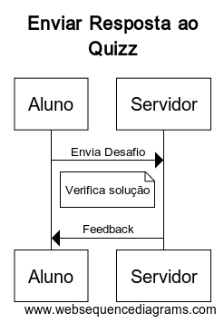

Guia para os desenvolvedores
Como configurar o ambiente de desenvolvimento
- Criar uma base de dados quiz.db através do sqlite3.
$ sqlite3 quiz.db - Rodar as queries presentes no arquivo quiz.sql no terminal do sqlite aberto nessa base de dados.
- Popular um arquivo users.csv com usuarios(*Obs: logins 'admin' e 'fabioja' são reservados para professores).
- Rodar o script adduser.py para adicionar esses usuarios na base de dados.
- Rodar o arquivo softdes.py, que irá inicializar o servidor do programa.
Instalação do software
sqlite3, Flask, Flask_httpauth, hashlib e python3 são pacotes necessários para rodar o servidor.
Estrutura do código em alto nível
O presente software oferece uma plataforma para os alunos de Design de Software submeterem suas respostas aos quizzes da matéria por meio de comunicações de API, seguindo o padrão REST. O servidor recebe o arquivo com a solução de determinado quizz e devolve ao aluno um feedback sobre a validade ou não da sua resposta. Os seguintes diagramas mostram dois importantes fluxos de eventos:
- Autenticação de usuário:

- Envio de respostas:
